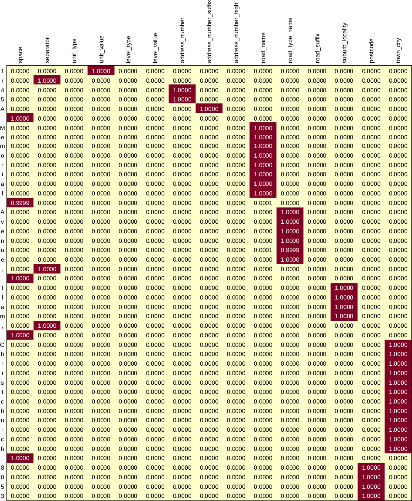

Overview
Geocoding, the act of assigning a location to a description of a place, is a very common use case. And being a common use case, there are an astonishing number of options for us to avail ourselves of, both commerical and open source.
Commericial options tend to be very easy to consume, mostly perform adequately, and the total cost of ownership can be low. However, the terms of use associated with commerical options can be rather unpalatable. Most, for example, expressly forbid the caching of results, and do not permit users to display results on third-party maps. Depending on the nature of your business, there may even be privacy concerns.
On the other hand, there are a number of open source solutions which function well, pelias being a particularly good example, and those who contribute should be commended. Depending on your level of use, the total cost of ownership can be higher than commercial offerings, but self-hosting means you’re not bound by any restrictive terms of use. However, open source solutions tend to rely on crowd sourced data such as OpenStreetMap, which can have coverage issues; or they rely on pre-trained models for address parsing, which can perform a little worse than desired for specific locales.
Either way, I recently decided to try building my own geocoding solution. This was in part related to concerns already outlined, but while I was investigating various options, I also received an email from Land Information New Zealand (LINZ) declaring their publicly available NZ Addresses feature set to be authoritative. I figured, if a definitive data set of all addresses was available, why not build a geocoding service on top of it?
Geocoder Outline
Our geocoding process will be relatively simple:
- parse an address string into its constituent pieces
- search an address database for a record with similar components
Any single address can be written down a few different ways, with all variations being completely understandable. This makes parsing addresses a relatively difficult task, and is the focus of this post. We’ll sketch a solution, providing small code snippets along the way. Complete source code can be found on GitHub:
Once we have accurately parsed an address, it is reasonably straightforward to search an address database for similar records. Combining all this, we can make a web service which receives an address string as input, and returns one or more potential matches as a result. This will be the focus of our next post.
LINZ Addresses
A LINZ address record contains separate fields for the constituent parts of an address, as well as a single string which combines the individual fields in a standard way. The most useful fields are:
| field | description |
|---|---|
address_id |
Persistent ID. |
unit_type |
Unit type, e.g. apartment, flat, unit, shop, suite. |
unit_value |
Unit value, e.g. 1, 2, A01, 1C, etc. |
level_type |
Level type, e.g. ground, lower ground, level. |
level_value |
Level value, typically numeric, but ‘P’ for penthouse. |
address_number |
Address number. |
address_number_suffix |
Address number suffix, e.g. A, B, C, AB, BAA. |
address_number_high |
Highest number in a range, e.g., 1-5. |
road_name |
Road name. |
road_type_name |
Road type, e.g. Street, Road, Avenue, Grove. |
road_suffix |
Road suffix, e.g. East, West, Lower, Upper. |
suburb_locality |
Suburb or locality, e.g. Aro Valley. |
town_city |
Town or city, e.g. Inglewood, Porirua, Auckland. |
These fields are, of course, constrained in practice–address_number must be a number, for example. However, let us model an address simply as follows (and note we include postcode, which is not provided with the LINZ data):
case class AddressComponents(
unitType: Option[String],
unitValue: Option[String],
levelType: Option[String],
levelValue: Option[String],
addressNumber: Option[String],
addressNumberSuffix: Option[String],
addressNumberHigh: Option[String],
roadName: Option[String],
roadTypeName: Option[String],
roadSuffix: Option[String],
suburbLocality: Option[String],
townCity: Option[String],
postcode: Option[String]
) {
lazy val toJson: String = ???
}A Note About Postcodes
While LINZ provide the authoritative address dataset, the addresses are provided without postcode. It won’t be useful to get into the details here (though visiting this link is educational), suffice to say that a geocoder that is ignorant of postcode is considerably less useful in practice than one that is not. For various reasons, an address string encountered in the wild will typically include a postcode and so our parser should be able to correctly identify one if provided. Moreover, we’d also ideally be able to use postcode as a filter when searching for addresses.
Address Parser Take 1
There are a handful of open source address parsers available which are in very heavy use, notably libpostal and deepparse. Consider the following address:
1/45A Memorial Avenue, Ilam, Christchurch 8053If we parse this using the pre-trained model provided with libpostal we get:
{
"house_number": "1/45a",
"road": "memorial avenue",
"suburb": "ilam",
"city": "christchurch",
"postcode": "8053"
}And if we parse this with deepparse we get:
{
"StreetNumber": "1/45a",
"StreetName": "memorial avenue",
"Unit": null,
"Municipality": "ilam",
"Province": "christchurch",
"PostalCode": "8053",
"Orientation": null,
"GeneralDelivery": null,
"EOS": null
}In both cases the results are reasonable. However, we want to search for addresses within the authoritative LINZ address file, and this task would be considerably easier if the components we parsed were in one-to-one correspondence with fields in that dataset. So, for example, we’d rather the street address, 1/45A, was parsed as separate components unitValue, addressNumber, and addressNumberSuffix with values 1, 45, and A, respectively. Similarly, we’d rather the street was parsed sparately into roadName and roadTypeName with values memorial and avenue, respectively.
To be fair to these parsers, these are the results using the provided pretrained models, and it is possible to fine-tune them. According to the deepparse repository, for example, it did not use New Zealand data in its training, but still achieved 91.25% accuracy when tested on New Zealand data. Moreover, deepparse can be retrained, including with different tags. But let’s attempt to build a parser from scratch all the same.
Address Parser Take 2
While addresses can be formatted in a number of ways, a large proportion of the strings we’d see in practice would likely fit one of only a small number of patterns. In these cases, we could probably parse an address easily enough using regular expressions. For example, consider again the address:
1/45A Memorial Avenue, Ilam, Christchurch 8053We can describe this easily enough using the following pattern:
val regex = "^(\\d+)/(\\d+)([a-zA-Z]{1}) ([a-zA-Z\\s]+) ([a-zA-Z]+), ([a-zA-Z\\s]+), ([a-zA-Z\\s]+) (\\d{4})$".rAnd once we have an expression that fits, we can extract the individual components as directly:
val address = "1/45A Memorial Avenue, Ilam, Christchurch 8053"
val regex(
unitValue,
addressNumber, addressNumberSuffix,
roadName, roadTypeName,
suburbLocality, townCity, postcode
) = addressval unitValue: String = 1
val addressNumber: String = 45
val addressNumberSuffix: String = A
val roadName: String = Memorial
val roadTypeName: String = Avenue
val suburbLocality: String = Ilam
val townCity: String = Christchurch
val postcode: String = 8053A (pretty terrible) parser would then be as follows:
def parse(address: String): AddressComponents = {
val regex = "^(\\d+)/(\\d+)([a-zA-Z]{1}) ([a-zA-Z\\s]+) ([a-zA-Z]+), ([a-zA-Z\\s]+), ([a-zA-Z\\s]+) (\\d{4})$".r
val regex(
unitValue,
addressNumber, addressNumberSuffix,
roadName, roadTypeName,
suburbLocality, townCity, postcode
) = address
AddressComponents(
None, Some(unitValue),
None, None,
Some(addressNumber), Some(addressNumberSuffix), None,
Some(roadName), Some(roadTypeName), None,
Some(suburbLocality), Some(townCity), Some(postcode)
)
}It works for this particular address, but it would crash for any address that didn’t match–we need to extend it to handle every notable pattern for it to be generally useful.
parse(address).toJson{
"unitType": null,
"unitValue": 1,
"levelType": null,
"levelValue": null,
"addressNumber": 45,
"addressNumberSuffix": "A",
"addressNumberHigh": null,
"roadName": "Memorial",
"roadTypeName": "Avenue",
"roadSuffix": null,
"suburbLocality": "Ilam",
"townCity": "Christchurch",
"postcode": "8053"
}Address Parser Take 3
A different possible approach is to build something like libpostal or deepparse from scratch, customised for use with the LINZ address file. Some sort of bidirectional recurrent neural network (BRNN) would seem to be a reasonable candidate, and for this exercise we settle on a relatively simple model composed of birectional long short-term merory (LSTM) layers. A good practical example of this is AddressNet, which uses the Australian address database to do more or less exactly that.
Data
In the next post we show how one can load the LINZ address data to a PostGIS database. While we could appeal to this data in real-time when training our address parser, things are much simpler in practice if we appeal to simple text files. For convenience, files are provided with the address parser source code. If one has an address database up and running, such files are easily created–in R, for example:
create raw data
con <- DBI::dbConnect(
RPostgreSQL::PostgreSQL(),
user = "<username>",
password = "<password>",
dbname = "<dbname>",
port = <port>,
host = "<server>"
)
addr <- DBI::dbGetQuery(
con,
"
select
unit_type, unit_value, level_type, level_value,
address_number, address_number_suffix, address_number_high,
road_name, road_type_name, road_suffix,
suburb_locality, postcode, town_city,
random() as r
from
linz.addresses_v
order by
r
"
)
data.table::fwrite(
addr[addr$r <= 0.8, -which(colnames(addr) == "r")],
"linzaddress_train.csv.gz",
col.names = FALSE,
sep = "|"
)
data.table::fwrite(
addr[addr$r > 0.8, -which(colnames(addr) == "r")],
"linzaddress_test.csv.gz",
col.names = FALSE,
sep = "|"
)
DBI::dbDisconnect(con)A simple model…
Here’s an example of a model we could train using Deeplearning4j:
LSTM model
import org.deeplearning4j.nn.conf.NeuralNetConfiguration
import org.deeplearning4j.nn.conf.graph.MergeVertex
import org.deeplearning4j.nn.conf.layers.{LSTM, RnnOutputLayer}
import org.deeplearning4j.nn.conf.layers.recurrent.Bidirectional
import org.deeplearning4j.nn.graph.ComputationGraph
import org.deeplearning4j.nn.api.OptimizationAlgorithm
import org.nd4j.linalg.activations.Activation
import org.deeplearning4j.nn.weights.WeightInit
import org.nd4j.linalg.learning.config.Adam
import org.nd4j.linalg.lossfunctions.LossFunctions
import org.deeplearning4j.nn.conf.inputs.InputType
val architecture = new NeuralNetConfiguration.Builder()
.weightInit(WeightInit.XAVIER)
.optimizationAlgo(OptimizationAlgorithm.STOCHASTIC_GRADIENT_DESCENT)
.updater(new Adam(learningRate))
.seed(seed)
.graphBuilder()
.addInputs("features")
.setOutputs("prediction")
.setInputTypes(InputType.recurrent(vocabSize))
.addLayer(
"bdlstm1",
new Bidirectional(
new LSTM.Builder()
.nIn(vocabSize)
.nOut(numHiddenNodes1)
.activation(Activation.TANH)
.build()
),
"features"
)
.addLayer(
"bdlstm2",
new Bidirectional(
new LSTM.Builder()
.nIn(numHiddenNodes1)
.nOut(numHiddenNodes2)
.activation(Activation.TANH)
.build()
),
"bdlstm1"
)
.addLayer(
"prediction",
new RnnOutputLayer.Builder()
.nIn(numHiddenNodes2)
.nOut(numClasses)
.activation(Activation.SOFTMAX)
.lossFunction(LossFunctions.LossFunction.MCXENT)
.build(),
"bdlstm2")
.build()
val model = new ComputationGraph(architecture)
model.init()Training
We pass address strings through our network as a sequence of labelled characters. For example, our example address
1/45A Memorial Avenue, Ilam, Christchurch 8053would be labelled as follows:
1 |
unit_type |
/ |
separator |
4 |
address_number |
5 |
address_number |
A |
address_number_suffix |
˽ |
space |
M |
road_name |
e |
road_name |
m |
road_name |
o |
road_name |
r |
road_name |
i |
road_name |
a |
road_name |
l |
road_name |
˽ |
space |
A |
road_type_name |
v |
road_type_name |
e |
road_type_name |
n |
road_type_name |
u |
road_type_name |
e |
road_type_name |
, |
separator |
˽ |
space |
I |
suburb_locality |
l |
suburb_locality |
a |
suburb_locality |
m |
suburb_locality |
, |
separator |
˽ |
space |
C |
town_city |
h |
town_city |
r |
town_city |
i |
town_city |
s |
town_city |
t |
town_city |
c |
town_city |
h |
town_city |
u |
town_city |
r |
town_city |
c |
town_city |
h |
town_city |
˽ |
space |
8 |
postcode |
0 |
postcode |
5 |
postcode |
3 |
postcode |
Actually, we pass our characters and labels as one-hot encoded vectors. For example, our vocabulary here consists of the following 46 characters:
, ', ,, -, /, 0, 1, 2, 3, 4, 5, 6, 7, 8, 9, a, b, c, d, e, f, g, h, i, j, k, l, m, n, o, p, q, r, s, t, u, v, w, x, y, z, ā, ē, ī, ō, ū
0 happens to be the 6th element of our vocabulary, so we’d represent this as follows:
\[ \underbrace{% \begin{bmatrix} 0 & 0 & 0 & 0 & 0 & 1 & 0 & \ldots & 0 & 0 & 0 \end{bmatrix}% }_{46} \]
Similarly, the full set of labels are:
space, separator, unit_type, unit_value, level_type, level_value, address_number, address_number_suffix, address_number_high, road_name, road_type_name, road_suffix, suburb_locality, postcode, town_city
address_number is the 7th of our labels, so we’d represent this as follows:
\[ \begin{bmatrix} 0 & 0 & 0 & 0 & 0 & 0 & 1 & 0 & 0 & 0 & 0 & 0 & 0 & 0 & 0 \end{bmatrix} \]
When training, we allow the string representation to vary a little, as well as introducing typos. For example, the following are several random variations of our example address:
1/45A Memorial Avenue, Ilam, Christchurch 8053
1/45A Memorial Ave, Ilam
1/45A Memorial Avnue, Ilam, Christcyurch 8053
1/45A Memorial Av, Ilam, Christchutch 8053Our model outputs a set of 15 numbers for each character, roughly representing a probability, and the one with the largest numeric value is the assigned category. After training, this looks as follows for our test address:

We can then use this array to extract our labels easily enough. We omit implementation details, but we create a function with the following signature:
def parse(address: String)(implicit m: ComputationGraph): AddressComponents =
???And we can then do this:
parse("1/45A Memorial Avenue, Ilam, Christchurch 8053").toJson{
"unitType": null,
"unitValue": 1,
"levelType": null,
"levelValue": null,
"addressNumber": 45,
"addressNumberSuffix": "A",
"addressNumberHigh": null,
"roadName": "Memorial",
"roadTypeName": "Avenue",
"roadSuffix": null,
"suburbLocality": "Ilam",
"townCity": "Christchurch",
"postcode": "8053"
}And we’re done! Cool-i-o.
Model evaluation
At the time of writing, the LINZ address file contained 2,314,785 addresses. This is more than enough to train our model, so we can hold out a portion for evaluation. If we define success as correctly classifying every character in our address string, we achieve over 99.9% accuracy for a test set of 20% (some 460000) of the addresses. Of course, in practice we’ll only achieve this sort of accuracy on address strings that are similar enough to the ones used for training, but this is a good outcome all the same. If our results prove inadequate, because we failed to allow for a particular arrangement of our address components when training, we could always refine the way we create our training data and retrain our model.
Up Next…
In the next post we’ll take the address parser we made here and use it to create a geocoder.